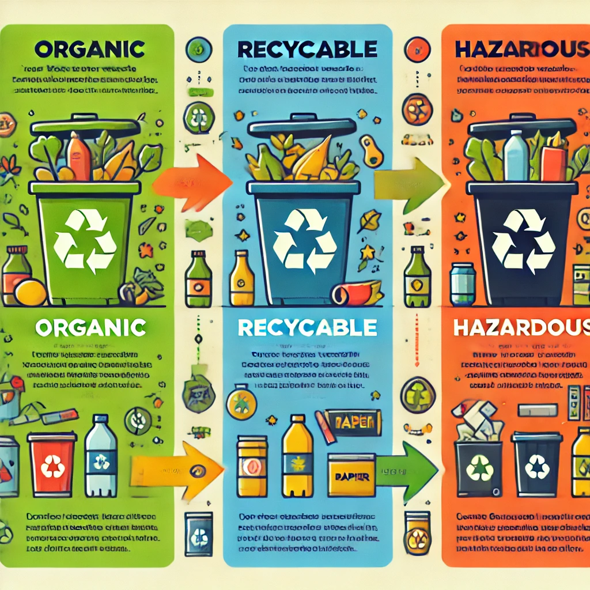

Edukasi Pemilahan Sampah

Sampah Organik
Sampah organik adalah sampah yang berasal dari bahan alami, seperti sisa makanan, dedaunan, atau limbah kebun. Sampah ini dapat terurai secara alami.
Cara Pengolahan Sampah Organik
Sampah organik dapat diolah menjadi kompos, yang bisa digunakan untuk menyuburkan tanah. Pengolahan ini sangat ramah lingkungan karena mengurangi jumlah sampah yang masuk ke tempat pembuangan akhir (TPA).
- Contoh Sampah Organik: Sisa makanan, daun, kulit buah, dll.
- Pengolahan: Komposting, pembuatan pupuk organik.
Sampah Anorganik
Sampah anorganik terdiri dari bahan-bahan yang tidak dapat terurai secara alami, seperti plastik, kaca, logam, dan kertas. Sampah ini memerlukan proses daur ulang untuk dapat digunakan kembali.
Cara Daur Ulang Sampah Anorganik
Sampah anorganik seperti botol plastik, kaleng, dan kertas dapat didaur ulang untuk menghasilkan produk baru yang berguna. Proses daur ulang mengurangi dampak lingkungan dan menghemat sumber daya alam.
- Contoh Sampah Anorganik: Botol plastik, kaleng, kaca, kertas, dll.
- Cara Daur Ulang: Pencucian, pemilahan, dan pengolahan menjadi bahan baru.
Sampah B3 (Bahan Berbahaya dan Beracun)
Sampah B3 adalah sampah yang berbahaya bagi kesehatan dan lingkungan. Sampah ini meliputi bahan kimia, baterai, limbah medis, dan lainnya.
Bahaya Sampah B3 Jika Tidak Diproses dengan Benar
Sampah B3 yang tidak diproses dengan benar dapat mencemari tanah dan air, serta menimbulkan risiko kesehatan bagi manusia dan makhluk hidup lainnya. Oleh karena itu, pengolahan dan pembuangan yang aman sangat penting.
- Contoh Sampah B3: Baterai bekas, lampu neon, limbah medis, dll.
- Bahaya: Pencemaran tanah, air, dan udara yang dapat menyebabkan penyakit.
Gambar Cara Memilah Sampah
Mengapa Penting Memilah Sampah?
Memilah sampah bukan hanya membantu menjaga kebersihan lingkungan, tetapi juga mendukung keberlanjutan. Dengan memilah sampah, kita bisa mengurangi volume sampah yang dibuang ke TPA, mengurangi polusi, dan menghemat sumber daya alam untuk daur ulang.
Pemilahan sampah juga dapat mengubah sampah yang tidak terpakai menjadi produk baru yang berguna. Oleh karena itu, mari mulai memilah sampah dari rumah!